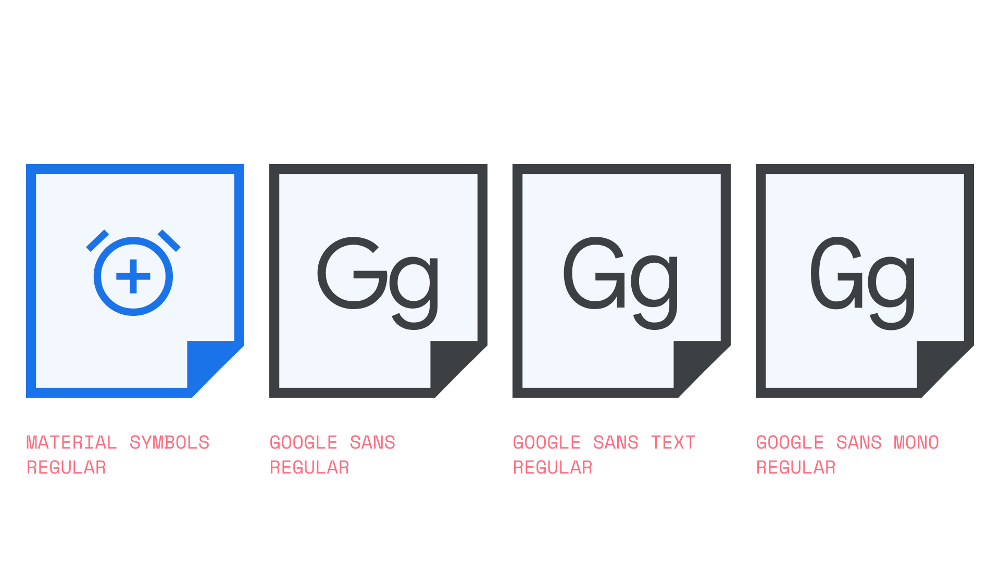

Icon font
By Google Fonts Knowledge contributors · Google Fonts Knowledge.
Original article · Source on GitHub · CC BY-SA 4.0. Text, illustrations and existing credits reproduced from the licensed Knowledge repository. Open Shelf adapted the layout and links; these adaptations are also CC BY-SA 4.0. No endorsement implied.
An icon font is a font that exclusively contains icon glyphs rather than alphanumeric glyphs. A couple of examples are Material Icons and Material Symbols—both are icon fonts, although Material Symbols is a variable font, allowing for fine-tuning via variable axes.

Using fonts to render icons has multiple benefits:
- Being vector-based, they’re infinitely scalable, unlike rasterized images.
- Contained in one file, the file size is considerably smaller than a collection of individual images—even vector-based ones.
- When used on the web, they can be colored and positioned using just CSS, and browser support is excellent.
- When using variable icon fonts, they’re customizable in a way that allows them to be more closely matched to any accompanying type.